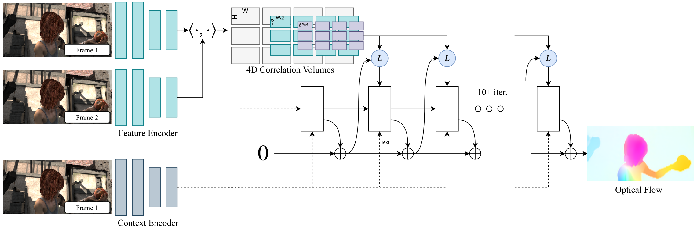

RAFT: Recurrent All-Pairs Field Transforms for Optical Flow¶
Optical flow is the task of estimating per-pixel motion between video frames. The best systems are limited by difficulties including fast-moving objects, occlusions, motion blur, and texturelss surfaces.
Optical flow has traditionally been approached as an optimization problem which defines a trade-off between a data term which encourages the alignment of visually similar image regions and a regularization term which imposes priors on the plausibility of motion. Recently, deep learning has been shown as a promising alternative to traditional methods and achieves comparable performance while being significantly faster.
In this paper, the authors introduce Recurrent All-Pairs Field Transforms (RAFT), a new deep network architecture for optical flow. It achieves SOTA results on KITTI and Sintel, and displays strong cross-dataset generalization and high efficiency.
{kind=link}
Approach¶
Given a pair of RGB images, \(I_1\), \(I_2\), we estimate a dense displacement field \((\mathbf{f}^1, \mathbf{f}^2)\), which maps each pixel \((u, v)\) in \(I_1\) to its corresponding coordinates \((u', v') = (u + f^1(u), v + f^2(v))\) in \(I_2\).
RAFT consists of a feature encoder, a correlation layer, and a recurrent GRU-based update operator, where all stages are differentiable and composed into an end-to-end trainable architecture.
Feature Extraction¶
Feature are extracted from the input images using a convolutinoal network. The encoder \(g_\theta\) outputs features at 1/8 resolution with \(D = 256\): \(g_\theta: \mathbb{R}^{H \times W \times 3} \mapsto \mathbb{R}^{H/8 \times W/8 \times D}\). There is an additional context network \(h_\theta\) that extracts features only from the first image \(I_1\).
Computing Visual Similarity¶
Given input features \(g_\theta(I_1) \in \mathbb{R}^{H \times W \times D}\) and \(g_\theta(I_2) \in \mathbb{R}^{H \times W \times D}\), the correlation volume is formed by taking the dot product between all pairs of feature vectors:
Correlation Pyramid: The authors construct a 4-layer pyramid \(\{\mathbf{C}^1, \mathbf{C}^2, \mathbf{C}^3, \mathbf{C}^4\}\) by pooling the last two dimensions. Thus \(\mathbf{C}^k \in \mathbb{R}^{H \times W \times H/2^k \times W/2^k\}\). The set of volumes gives high resolution information about both large and small displacements.
Correlation Lookup: The authors define a lookup operator \(L_\mathbf{C}\) which generates a feature map by indexing from the correlation pyramid. Given a current estimate of optical flow \((\mathbf{f}^1, \mathbf{f}^2)\), they map each pixel \(\mathbf{x} = (u, v)\) to its estimated correspondence \(\mathbf{x}' = (u + f^1(u), v + f^2(v))\). Then they define a local grid around \(\mathbf{x}'\):
They use the local neighborhood \(\mathcal{N}(\mathbf{x}')_r\) to index from the correlation volume.
Efficient Computation for High Resolution Images: Although all pairs correlation scales \(O(N^2)\), there is an equivalent implementation that scales \(O(NM)\) by exploiting the linearity of the inner product and average pooling.
Iterative Updates¶
The update operator estimates a sequence of flow estimates \(\{\mathbf{f}_1, \dots, \mathbf{f}_N\}\) from an initial starting point \(\mathbf{f}_0 = 0\). In each iteration, we have \(\mathbf{f}_{k+1} = \Delta \mathbf{f} + \mathbf{f}_k\).
The update operator takes flow, correlation, and a latent hidden state as input, and outputs \(\Delta \mathbf{f}\) and an updated hidden state.
Inputs: Given current flow \(\mathbf{f}^k\), we retrieve correlation features from the correlation pyramid. The correlation feature are then processed by 2 convolutional layers. Another 2 convolutional layers are applied to the flow estimate for flow features. The input feature map is then taken as the concatenation of the correlation, flow and context features.
Update: A core component of the update operator is the gated activation unit based on the GRU cell:
Flow Prediction: The hidden state outputted by the GRU is passed through two convolutional layers to predict the flow update \(\Delta \mathbf{f}\).
Supervision¶
They supervise the network with the L1 distance between the full sequence of predictions and the ground truth flow with exponentially increasing weights: